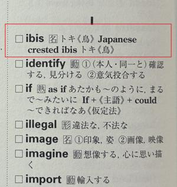

うるがいの話 ある日
最新: ペーパーバック【うるがいの話 ある日】とは 一日だけのプログです
『うるがいの話』の最新一日だけのプログで、通信料が少なく経済的だ。カニの画像をクリックすると全ての日付が載る『うるがいの話』サイトを表示します
|
|
【うるがいの話】 うるがい(ｳﾙｶﾞｲ urugai)とは、『もずくがに』の名前でとても大きくなります。 |
|---|---|
|
|
【カミマヤーの話】 猫のことを方言でマヤーといいます。カミマヤー（kamimayaa）とは、神の猫のことです。 |
|
【たながぁの音楽】 たながぁ（ﾀﾅｶﾞｰ tanagaa）とは手長えびのことで、何種類かあり大きいのは車 エビぐらいになります。 |

|
【ぶながぁの話】 ぶながぁ(ﾌﾞﾅｶﾞｰ bunagaa)とは、赤い髪の毛、赤い身体、そして身長は１ｍ２０ｃｍ ぐらい、川の蟹を食べているの目撃された。場所は沖縄県国頭郡大宜味村のと ある村僕の隣近所に住んでいる爺さんから、聞いた話です。 |
|
|
【ギーマの話】 ギーマ(giima)とは、山原の里山に咲くスズランに似た、 花を付けます。実は食べられます、 気が付くと口の周りが紫になっています。 |
2026年10月19日 (月）ペーパーバック
16:27
英語の原書の本が置いてある場所を教えて下さいと、図書館の
係の人に尋ねると、いままで気付かなかった棚や、別のフロア
を教えてもらいました。語学学習のためのラダーシリーズを利
用するのに、飽きてしまった。それと、最後に読んだ本
『Endangered Species (絶滅危惧種)』のトキの単語説明で發
音が（イービス？）、載っていない。これではいけないと遅れ
ばせながら気付いたのです。
これが、ラダーシリーズの説明

下が、いま利用しているポケット辞書（アイビス）
で、英語の原書ペパーブックをパッと見、借りました。
果たして、読んでいけるのでしょうか。日本語訳の本の紹介を
見ると
BORN TO RUN 走るために生まれた
ウルトラランナーVS人類最強の“走る民族"
この冒険は、たったひとつの疑問からはじまった。
「どうして私の足は走ると痛むのか?」
その答えを探すなかでクリストファー・マクドゥーガルは
世界でもっとも偉大な長距離ランナー、タラウマラ族に行きつ
く。
その過程でわかったこと──
わたしたちがランニングについて知っていることはどれもすべ
てまちがいだ─
なんと、ジョギングマニアの私にぴったしカンカン。２８７頁
あります、完読できるでしょうか。
先程から腰が痛くなりました。
立ったりしゃがんだりで、
左側がズキッとするので、
クラッチ踏むのがキツいです。
フムフム、私もこの前突如として左わき腹が何故か痛くなった
ぜ（数日後、完治した）、師匠歳だべ。マ、毎日見ているプロ
グに昨日
今日10月18日(日)は、十死日（じゅうしにち）という縁起が悪
い最凶日です。「十死一生」とも言い、10分の10が死ぬ、ある
いは「ほとんど助かる見込みがない」「生きる見込みがない」
といった極めて危険な状態を指す大凶とされる日です。
なにやら、不安がよぎったが、確かにそして暦をみると仏滅だ
った。
里帰りしたコドモを、到着出口付近で待つ。お、太っている。
本人は、言わない。